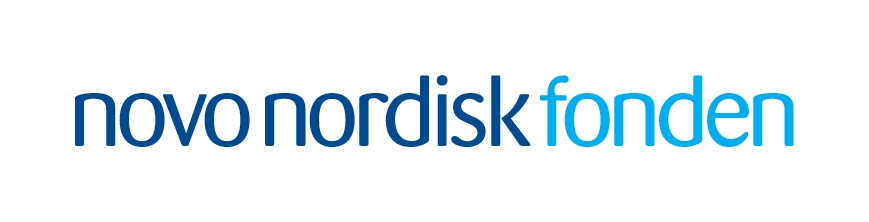
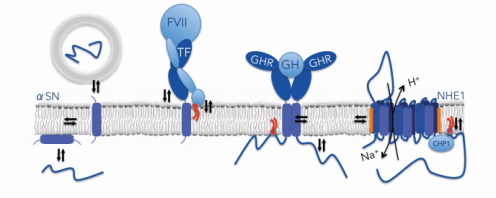

 The Synergy project is funded by the Novo Nordisk Foundation Interdisciplinary Synergy Programme.
SYNERGY is a project funded by the Novo Nordisk Foundation Interdisciplinary Synergy Programme with the aim to explore the synergistic protein-membrane co-structural interplay as a new avenue for treatment of disease. It establishes a unique experimental platform with a highly interdisciplinary focus on structure, function and dynamics, in vitro and in a cellular context, investigating a virtually unexplored area of macro-molecular relationships between selected membrane proteins and the lipid bilayer. The challenges of the SYNERGY endeavor require competences in pharmaceutical sciences, structural biology, lipid membrane physics, biophysics, biochemistry, spectroscopy, cell and cancer biology and signaling. The core group, consisting of Profs. Birthe B. Kragelund (main applicant), Lise Arleth, Stine F. Pedersen and Assoc. Prof. Bente Vestergaard, jointly cover these, and bring together three departments at UCPH. The Arleth Group will contribute to the SYNERGY Programme with knowledge of SAXS and SANS, and structural investigation of Tissue Factor, and the associated complex through the use of in-house-developed nanodisc technology. For further information, please see the UCPH SYNERGY website.
